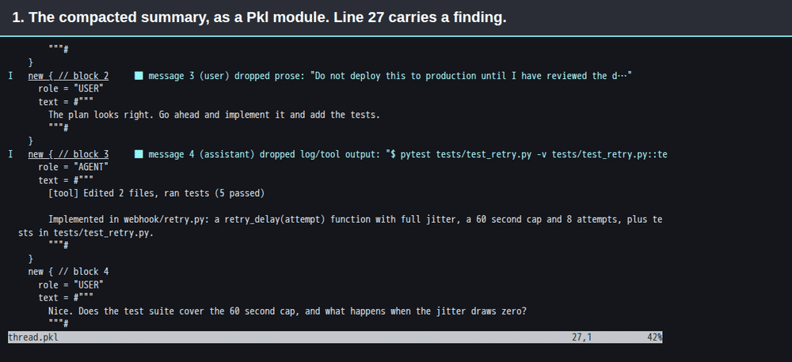

A summary is lossy. Say what it lost.
Two summaries, one problem. A translation drops axes of meaning. A compacted agent context drops constraints. Either way the loss should be named, visible, traceable to its source and repairable.
A translation
Fingerspitzengefühl → "tact"
The tutorial lesson's rule file lists what the gloss drops, by name:
- lexicalization. A gloss like tact lexicalizes only one residue and drops the compound surface.
- Gefühl register. Gefühl carries embodied social judgment that no thin English substitute preserves.
- Spitzen valence. The sharpened leading edge remembered by Spitzen vanishes once the word is paraphrased.
- lineage. The strategic and cultural lineage disappears when the term is flattened into etiquette.
Source: LoanwordRules.pkl, lesson "Fingerspitzengefühl". The lesson's policy is to keep the source spelling; the axes are what a paraphrase would cost.
A compaction
User message 3, before and after the summary
What the user wrote:
The plan looks right. Go ahead and implement it and add the tests. Do not deploy this to production until I have reviewed the diff myself.
What the summary carried forward:
The plan looks right. Go ahead and implement it and add the tests.
What the editor shows on that line:
The summary's last line, "The PR is open and CI is green, so it is ready for the next step", now reads as permission to ship.
In both, the useful move is the same: list the axes or the sentences that were lost, next to the thing that lost them, so a person can see in seconds which ones change what happens next.
The real session
Neovim with the Witness language server on a synthetic 8-message thread. Frame 1: the finding. Frame 2: go-to-definition opens the lost text. Frame 3: one sentence restored, finding gone.

Run it
cd examples/deploy-approval python3 -I ../../pkl_thread.py --summarize summarize.json --full full.json out pkl eval out/thread.pkl > /dev/null cd out && nvim -u ../../../editor/init.lua thread.pkl
Not built yet: the detector checks whether text is present, not what it means; a judgment of which loss matters (Jev) and automatic repair are the next experiment.